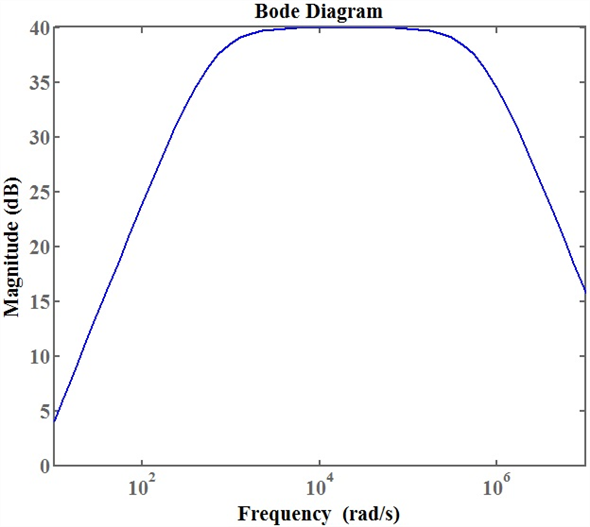

Step 1:
Refer to circuit diagram in Figure P2.93 in the textbook.
For an ideal op-map, the inverting and non-inverting terminal currents are zero and the inverting and non-inverting node voltages are equal.
Apply Kirchhoff’s current law at the inverting terminal of the operational amplifier.
Simplify the equation further to get the expression for  .
.
Step 2:
Divide the numerator and denominator by .
Assume, and .
The simplified expression is,
Remove the term to simplify the equation further.
…… (1)
Thus, the transfer function,  is .
is .
Step 3:
(a)
Assume that the angular frequencies, relate as follows:
 and
and
Recall the equation (1).

For  and
and  , and .
, and .
Therefore,
Thus, the approximate transfer function,  for the frequency region, is .
for the frequency region, is .
Step 4:
(b)
Assume that the angular frequencies,  relate as follows:
relate as follows:
 and
and
Recall the equation (1).
For and  , and .
, and .
Therefore,
Thus, the approximate transfer function,  for the frequency region, is .
for the frequency region, is .
Step 5:
(c)
Assume that the angular frequencies, relate as follows:
 and
and
Recall the equation (1).

For and , and .
Therefore,
Thus, the approximate transfer function, for the frequency region,  is .
is .
Step 6:
The gain of the circuit in dB is,
Calculate the voltage gain  .
.
The transfer function of the system for  is,
is,
Substitute  for
for  , and 100 for
, and 100 for  in the equation.
in the equation.
Therefore, the resistance,  is
is  .
.
Step 7:
Calculate the angular frequency,  .
.
Calculate the value of capacitance,  from the expression of an angular frequency,
from the expression of an angular frequency,  .
.
Substitute 628.32 rad/s for  , and
, and  for
for  to find the value of .
to find the value of .
Thus, the capacitance,  value is .
value is .
Step 8:
Calculate the angular frequency,  .
.
Calculate the value of capacitance,  from the expression of an angular frequency,
from the expression of an angular frequency,  .
.
Substitute 628.32 krad/s for  , and
, and  for
for  to find the value of
to find the value of  .
.
Thus, the capacitance,  value is 1.59 nF.
value is 1.59 nF.
Step 9:
Recall the equation (1).
Substitute  for
for  ,
,  for
for  , 628.32 krad/s for , and 628.32 rad/s for in the equation.
, 628.32 krad/s for , and 628.32 rad/s for in the equation.
Write the MATLAB code to generate the Bode plot for the magnitude response.
f=tf([62831853 0],[1 628946.82 394785079.92])
bodemag(f)
Step 10:
The following is the Bode plot for the magnitude response of the system.
